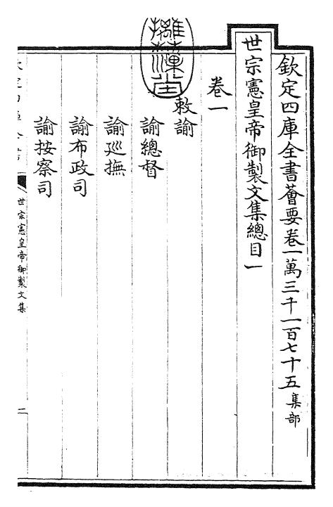

欽定四庫全書薈要卷一。世宗憲皇帝御製文集總目：諭總督、諭巡撫、諭布政司、諭按察司。
Chronology
雍正年表
以時間軸呈現雍正朝制度舉措與政治實踐，從繼位、吏治、財政到軍機處與邊疆治理。
Text Corpus
文獻庫
按文獻性質整理，而非雜亂排列。每類預留「原文、標點、注釋、導讀」欄位。
Book Prototype
《世宗憲皇帝御製文集》

《世宗憲皇帝御製文集》卷一，總目列諭文若干：諭總督、諭巡撫、諭布政司、諭按察司。
卷一所列多為面向督撫與地方大吏的政務諭旨，可與雍正朝吏治、財政整飭及地方治理材料互證。
此頁先示範「書影校讀」工作流：以影像定位卷頁，再逐條建立原文、標點、注釋與導讀，後續可擴展為整部文集。
Feature Prototype
硃批視覺化閱讀
臣工奏摺
臣某謹奏地方錢糧、官吏操守與民間流言諸事，伏候聖裁。
奏摺側重事由、責任與地方治理脈絡；可標註人名、地名、官職、案由。
雍正硃批
Prosopography
人物圖譜
人物頁可連到文獻、事件與研究提示。此處以人物群組與關係線索建立首版索引。
Political Geography
地圖與空間
把雍正朝的政治事件放回空間：宮廷、邊疆、改土歸流、曾靜案與呂留良文本流傳。
Images & Objects
圖像中的雍正
圖像不是裝飾，而是版本、制度、書寫與宮廷觀看方式的材料。
Research Tools
研究工具
先做可用的研究入口：全文檢索、關鍵詞索引、文獻對讀與版本比較。
全文檢索
關鍵詞索引
文獻對讀
以「華夷、君臣、正統」為核心，回應曾靜案所暴露的政治與思想危機。
以編年敘事記錄諭旨與政務，可與《大義覺迷錄》互證事件次序。
版本比較
預留《大義覺迷錄》不同版本、乾隆禁毀前後流傳、書影與藏本來源欄位。